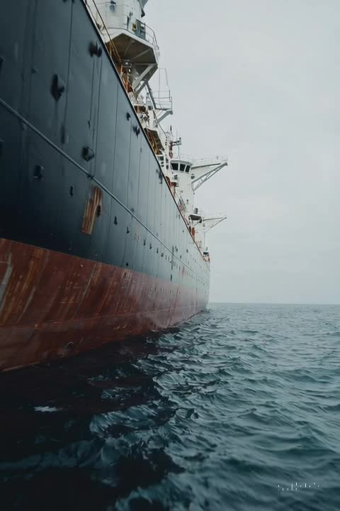

ILLUSTRATIVE VISUALVISUAL CONDITION CAPTURE
See the asset.
Locate what matters.
Document accessible external structures and areas of interest to support maintenance planning, condition reviews and inspection preparation.
- Hull above waterline, superstructure and deck equipment
- Jetties, quays and accessible offshore structures
- Overview imagery linked to close views and locations
Class survey support, confined spaces and thickness measurements require an agreed scope and appropriately approved specialists.
Explore an inspection pilot